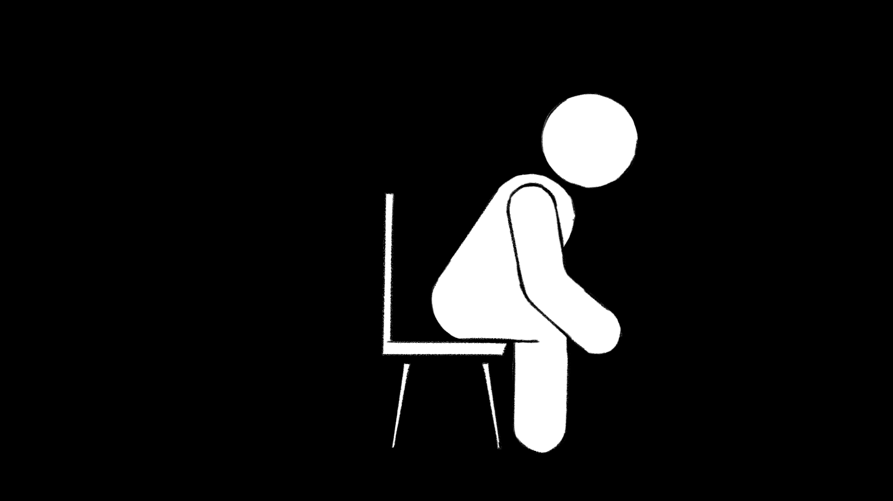

Raccogliamo dati anonimi di navigazione tramite Google Analytics. Privacy Policy
LeanTil sente quando ti incurvi e ti riporta in posizione, in silenzio, senza interrompere il tuo lavoro.
8 ore seduto al giorno: la postura scorretta non fa solo male alla schiena, ti prosciuga l’energia.
Riduci il carico su collo e spalle correggendo i piccoli slouch prima che diventino dolore.
Una postura aperta migliora l’ossigenazione e la concentrazione nelle sessioni di deep work.
LeanTil allena il tuo corpo a riconoscere la posizione corretta in modo naturale, col tempo.
Come LeanTil percepisce la postura

Tre passi. Zero complessità.
Posiziona LeanTil sulla tua sedia. Non serve nessuna configurazione.
I sensori monitorano l’allineamento della colonna in tempo reale.
Un segnale visivo discreto ti ricorda di tornare in posizione, senza distrarti.
Influenza il prodotto.
3 domande, 2 minuti. Ti risponderemo entro 48h.
LeanTil nasce nel pieno del COVID-19, quando ore infinite davanti allo schermo e zero movimento sono diventati la norma. Risultato? Schiena a pezzi. Quello è stato per me un problema da risolvere. Se vuoi confrontarti, scrivimi su LinkedIn.
LeanTil è in fase di beta testing con un primo gruppo di early adopter. Se vuoi partecipare, iscriviti tramite il form e ti contatteremo direttamente.
Clicca su “Riserva il tuo posto” e compila il form. Ti contatteremo direttamente con tutte le istruzioni entro 48 ore.
No. LeanTil si integra facilmente nella tua routine alla scrivania, senza stravolgere il modo in cui lavori.
LeanTil è un cuscino che si adatta a qualsiasi sedia. Rileva in tempo reale come distribuisci il peso. Quando riconosce una postura scorretta prolungata, invia un segnale visivo discreto per ricordarti di tornare in posizione.